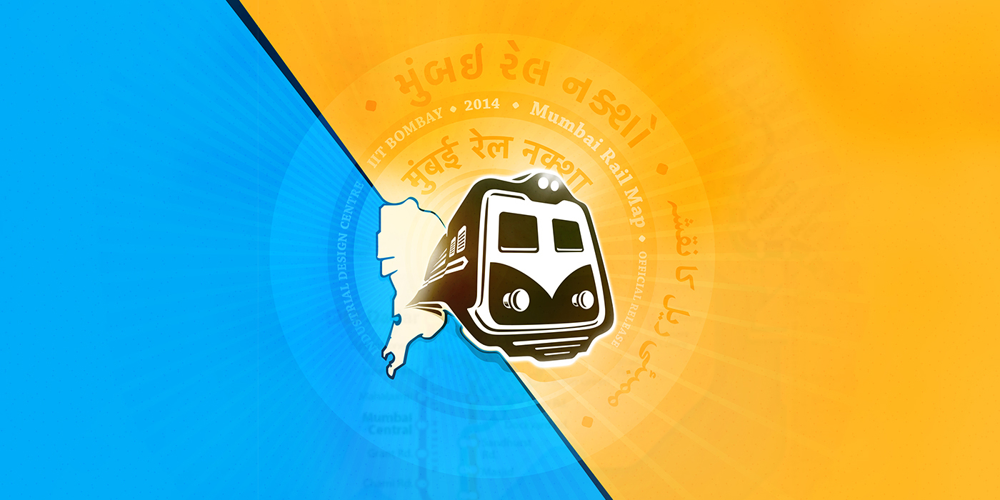

Supported by
Ministry of human resource and development, Govt. of India
Explore more at
www.mrmapp.in
MrmApp
Design of a travel application for the Mumbai sub-urban rail network
(Local, Metro and Mono rail)
- Download the latest application


for Android and iOS
# LoveMumbai
Sharing information, thoughts and experiences
about Mumbai sub-urban railway

After getting user feedback on the Mumbai Rail Map Project through the online media and testing done with the commuters at central railway stations – Mumbai CST & Dadar Central, it is observed that at every moment a large number of regular and new commuters requires help for information. Having a detailed version of railway map can serve the need only when it is installed at the right places. To reach out to a large number of fast moving crowds with well-equipped mobile devices, a mobile application could be more efficient and easily accessible as opposed to the traditional printed map. MrmApp is a step to further assist the commuters with a smoother travelling experience by providing all the required information available at a tap.
May - June 2014
The Story
While testing of the Mumbai Rail Map at Dadar central and Mumbai Chhatrapati Shivaji Terminus
मुंबई रेल नक्शा . ممبئی ریل کا نقشہ . मुंबई रेल नकाशा . મુંબઈ રેલ નક્શો
An extensive journey that started over a year back with two design students dreaming to give the cosmopolitan city of Mumbai a Rail Map has led us this far. Since the first Mumbai Rail Map launch in December 2013, the project has grown due to the perseverance of a motivated team, and the encouragement and feedback from the people of Mumbai. The latest version 6 of the MRM are available in Hindi, Marathi, Gujarati, Urdu & English languages
The first thought
One of the requests kept reappearing during the feedback. Most people were asking for a digital version of the Mumbai Rail Map to be accessed from their phones. Most wanted to click a picture of it for future reference. It can often be seen that as designers we tend to analyze and approach a design problem with an external point of view, as we may or may not be directly affected by it. It is, therefore, necessary to request and obtain user-feedback at numerous stages during the design process in order to keep true to the course, and help evolve the design to best resolve the problem at hand.
To look forward
One of the requests kept reappearing during the feedback. Most people were asking for a digital version of the Mumbai Rail Map to be accessed from their phones. Most wanted to click a picture of it for future reference. It was noticed that people requested either the map be circulated through the Internet or be made available as an application that could be accessed through digital devices. This let the MRM project in an interesting direction.There has been a staggering increase in the number of smartphone users in Urban India. While it was estimated at 51 million in 2013, the number is likely to have crossed approximately 104 million by the end of 2014. As per our user testing many of the commuters were already using the available mobile applications to get information on the plying trains and stations. This is increasingly becoming second nature to people – to be able to access any information as per their convenience. But of course accessibility and availability aren’t the only key factors at play here.
People have become habituated to accessing information in a more filtered manner. While a print map is more static in nature and has to display all the information together, including the routes (both fast and slow), station names and codes, travelling time, and kind of trains for every possible scenario or permutation; an interactive map is far more convenient as it reduces the cognitive load on the user by providing search specific information. It is an efficient approach for a world that is always on the move.
The primary hurdle with a static or a print map is, when installed on stations the user has to approach it whenever needed, it also is particularly difficult to update should there be an added route or fare change.
May - June 2014
What exists
Travel Apps related to the mumbai local
Do I need to know the connecting routes, prior to any query?
in Concern to a new commuter using the best application available currently in the stores:
Most of the applications carry the database that includes timings of trains, lines, station code and station names. They provide timings of a particular train only for on railway line at a time. And if a journey requires to switch the line for ex. Central line to Western or Harbour line, the user is expected to search for each of them individually. And that requires certain pre knowledge about routes and stations. Also another very prominent issue is that none of them provide an overview of the journey that is very crucial especially for a new commuter in Mumbai. There are a few very particular issues in the overview model of Mumbai. As the station codes are not always related to the concerned station name. Also the whole model of Mumbai railway is mainly based on north - south direction as they were lenient when started. Now when all the lines extended and new lines have been introduced, there are lines which intersect east to west also, having connected to the north south line. Without having an overview of the city, its very difficult to figure out.
An overview of my journey
None of the available apps provide a complete journey information with all the exchange details. List of trains are available only for a single route. In such cases I need to answer that which direction I want go first. For lines which are lenient, its easy to understand but for ex. if I have to travel from Andheri to Panvel or Khopoli to Kasara, it doesn’t seem to be clear which is up direction and which is down.
Currently all the details of the journey are based on textual input and results. None of them provide an overview on the map for a search query.
July 2014
fresh new
Mumbai Rail Map
Design for touch
Redesign of the Print Mumbai Rail Map for interactive use
Visible content
In a print scenario where all the information has to be up front at any point of the time in a layout. Where in the interactive map there can be multiple layer of information. And all of them need not be present on screen all the time. Only relevant content based on the search query can be visible and other can be hidden. Few of the most prominent content in print version are not necessary in the digital version of the map. Such as the numerical grid, Slow and Fast lines, Grid (Box) numbers, Terminal station indicators, Time between stations and Index for the map,
Density of the layout can be much relaxed as the size of the panel is not a constrain. So keeping a minimum change in visual language from the print layout, elements such as thickness of the lines, type size & weight, icons, shapes and their contrast have been modified. So the layout contents which are necessary for one particular search result. Rest of the information can appear later based on the query.
Touch friendly forms
Station markers presently used in the print map, are designed to orient the names of the station for the print situation. As markers had to mark fast and slow lines together (irrespective of the fact that both fast and slow stop are the same station), they were wide and thin to save the limited space available in the layout. But in the interactive map doesn’t need 2 lines that represent fast and slow track separately. Just a single line is enough to display the direction of the journey. That actually simplifies the layout very much. And the station markers can have more space for the touch screen devices. So the new station marker gets much circular form than the liner one used in the print version maps. Many times a single station carries its name more than once in the map because it has Mumbai Local, Metro rail and Mono rail station together. But because these stations in different railway systems, even after having same name, do not belong to the same place. To clarify the confusion, and to maintain consistency, we have used capsule marker forms for Mumbai Local and circular forms for others such as Metro rail and Mono rail.
Highlighting the markers
Each Station marker has been colour coded based on the line colour. Station marker is filled with a centre dot of same colour when highlighted and shown empty when they are not highlighted. Every-time the journey includes an interchange, the highlighting path has to highlight the respective station marker also. In that case only half part of a station marker needs to be highlighted. The other part of the station on the same junction remains un-highlighted.


Version 1.0
Launched on 14th February 2015
Currently available for Android and iOS

- Download the Application
and give your feedback to us at contact@mrmapp.in
- All Projects
 Mind On
Mind OnIdentity Design . Visual Brand Language
 Mumbai Rail Map
Mumbai Rail MapInformation Design
 My Mumbai My Local
My Mumbai My LocalInformation Design
 Eves 24 Jewells
Eves 24 JewellsIdentity Design . Visual Brand Language
 Karauli Diagnostics
Karauli DiagnosticsIdentity Design . Visual Brand Language
 MrmApp
MrmAppInformation Design
 Olive telecom
Olive telecomIdentity Design . Visual Brand Language
 Go Goa Gone
Go Goa GoneIdentity Design . Film Publicity design
 The Magic
The MagicFiction Short Film
 Bonifate INC.
Bonifate INC.Identity Design . Visual Brand Language
 Cezer . a Shoe with a soul
Cezer . a Shoe with a soulIdentity Design . Visual Brand Language
 White Locus
White LocusIdentity Design
 Bhaag Milkha Bhaag
Bhaag Milkha BhaagIdentity Design . Film Publicity design
 BMJ Awards
BMJ AwardsIdentity Design . Event Branding
 Culture Live
Culture LiveIdentity Design . Event Branding
 Spring Infradev
Spring InfradevIdentity Design . Visual Brand Language